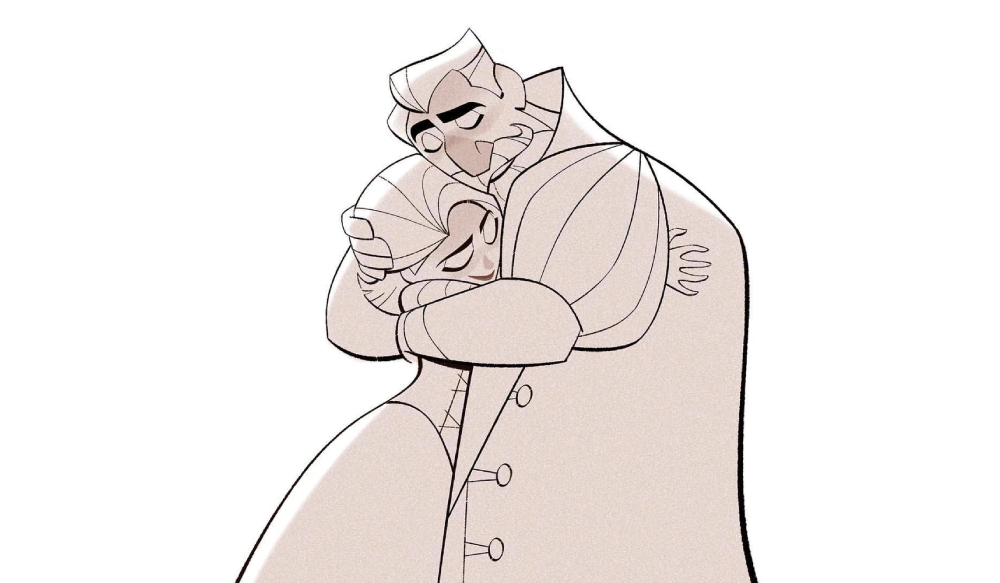

Rapunzel's Tangled Adventure (titulada en su primera temporada como Tangled: The Series, Enredados: La serie en España y Enredados otra vez: la serie en Latinoamérica, actualmente Las Aventuras Enredadas de Rapunzel en Latinoamérica) es una serie de televisión animada de Estados Unidos estrenada en Disney Channel el 24 de marzo de 2017. Se basa en la película Enredados de Walt Disney Animation Studios, dirigida por Nathan Greno y Byron Howard. Se lleva a cabo entre la película original y el corto "Tangled Ever After". Empieza con la película original de Disney Channel, Tangled: Before Ever After, estrenada el 10 de marzo de 2017. La serie cuenta con nuevas canciones de Alan Menken, que escribió la partitura y las canciones para la película original, además de la participación de Glenn Slater. Mandy Moore, Zachary Levi, Donna Murphy, M.C. Gainey, Ron Perlman, Jeffrey Tambor, y Paul F. Tompkins interpretan nuevamente sus papeles de la película. El 15 de febrero de 2017, se anunció que la serie había sido renovada por una segunda temporada antes del estreno de la serie.En junio de 2018 la serie fue renovada para una tercera temporada